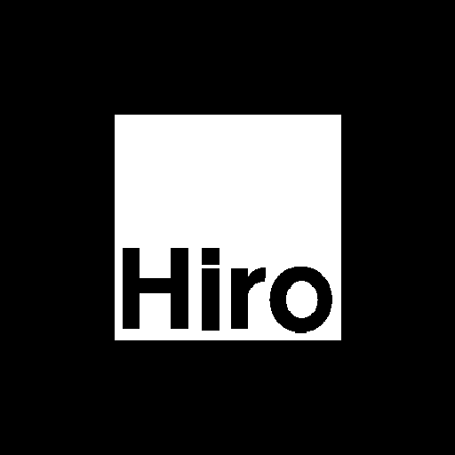

Marcador HIRO para el modo de Realidad Aumentada
Imprímelo
sin ajustar a la página
(«Tamaño real» o escala 100 %).
Deja el
margen blanco
alrededor del cuadro negro: sin él, la cámara no lo reconoce.
Usa papel mate y colócalo plano. Evita reflejos y sombras sobre el marcador.
También puedes mostrarlo en la pantalla de otro dispositivo con el brillo alto.
Tamaño del marcador:
6 cm
8 cm (recomendado)
12 cm
16 cm
🖨️ Imprimir
⬇️ Descargar imagen
🥽 Ir al modo AR

Lado del cuadro negro: 8 cm